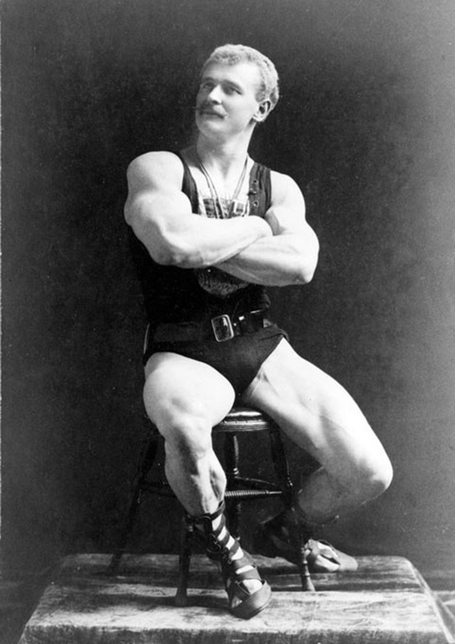
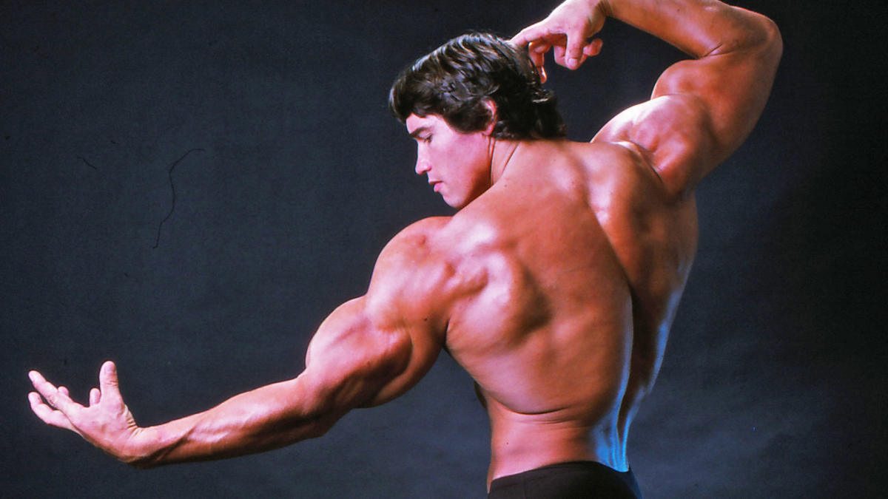

Origens do Fisiculturismo
O fisiculturismo, ou bodybuilding, tem suas raízes nos tempos antigos, quando o desenvolvimento físico era parte integral da cultura grega e romana. Na Grécia antiga, a valorização da estética corporal e da força era evidente nos competidores dos Jogos Olímpicos, que eram admirados não só por sua capacidade atlética, mas também por suas formas físicas esculpidas. No entanto, o fisiculturismo como esporte começou a tomar forma no final do século XIX.
Eugen Sandow e o Início Moderno
O nome mais associado ao nascimento do fisiculturismo moderno é o de Eugen Sandow, um alemão que se tornou famoso não só por suas incríveis proezas de força, mas por sua impressionante simetria e definição muscular. Sandow viajou pela Europa e América do Norte, realizando exibições onde não apenas demonstrava sua força levantando grandes pesos, mas também fazia poses para mostrar sua musculatura. Ele acreditava que o desenvolvimento físico deveria seguir princípios de simetria baseados nos ideais da arte grega e romana. Em 1901, Sandow organizou a primeira competição de fisiculturismo, chamada "Great Competition", em Londres. O evento foi um marco, reunindo centenas de participantes e um público imenso, consolidando Sandow como o "pai do fisiculturismo". Até hoje, o troféu dado aos campeões do Mr. Olympia é uma estátua de Eugen Sandow.
A Popularização nos Anos 1940 e 1950
Após a era de Sandow, o fisiculturismo continuou a evoluir. Nos anos 1920 e 1930, homens como Charles Atlas e Bernarr Macfadden ajudaram a popularizar a cultura do corpo através de revistas e programas de exercícios físicos. No entanto, foi com o surgimento de Steve Reeves nos anos 1940 que o fisiculturismo realmente começou a ganhar mais notoriedade. Reeves, um ícone do físico estético e harmonioso, também fez uma transição para o cinema, estrelando filmes épicos como "Hércules". Isso ajudou a trazer o fisiculturismo para o público em geral, especialmente nos Estados Unidos.
A Era de Ouro e o Mr. Olympia
Nos anos 1960, o fisiculturismo começou a se profissionalizar, especialmente com a criação de competições de alto nível, como o Mr. Olympia, fundado em 1965 por Joe Weider. Weider, que já era uma figura influente no mundo do fitness por meio de suas revistas, como "Muscle & Fitness" e "Flex", queria criar uma competição que coroasse o melhor fisiculturista do mundo. O Mr. Olympia logo se tornaria o evento mais prestigiado do fisiculturismo, e seu impacto foi imenso.
Arnold Schwarzenegger e o Fisiculturismo no Mainstream
Foi nessa mesma época que uma figura-chave entrou em cena: Arnold Schwarzenegger. Nascido na Áustria, Arnold dominou a cena do fisiculturismo nos anos 1970, vencendo o Mr. Olympia sete vezes e se tornando o rosto mais reconhecível do esporte. Sua jornada foi documentada no famoso filme "Pumping Iron" (1977), que não só elevou o status de Schwarzenegger ao de superestrela, mas também introduziu o fisiculturismo à cultura popular global. Arnold, com sua mistura de carisma, tamanho muscular e simetria impecável, definiu um novo padrão para o esporte.
A Evolução Moderna e os Grandes Campeões
Nos anos seguintes, o fisiculturismo continuou a evoluir. Nomes como Lee Haney, Dorian Yates e Ronnie Coleman elevaram ainda mais os padrões físicos, com Coleman vencendo o Mr. Olympia impressionantes oito vezes entre 1998 e 2005. Esses atletas trouxeram uma nova dimensão ao fisiculturismo, com um foco cada vez maior em volume muscular e definição extrema.
O Fisiculturismo Hoje
Atualmente, o fisiculturismo se expandiu para incluir várias categorias, como Men's Physique, Classic Physique, e Bikini, refletindo uma diversidade de padrões estéticos e atraindo uma gama mais ampla de competidores. O foco deixou de ser apenas o desenvolvimento muscular extremo e passou a incluir a simetria, proporção e condicionamento físico geral. Além disso, com a crescente popularidade da mídia social, o fisiculturismo ganhou novos canais de visibilidade, permitindo que atletas construam suas carreiras não só nas competições, mas também como influenciadores digitais.